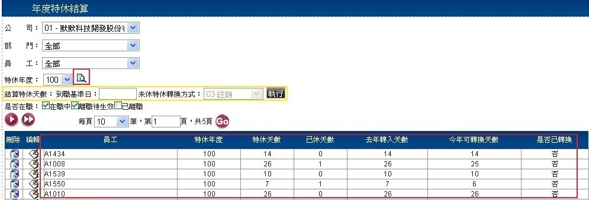
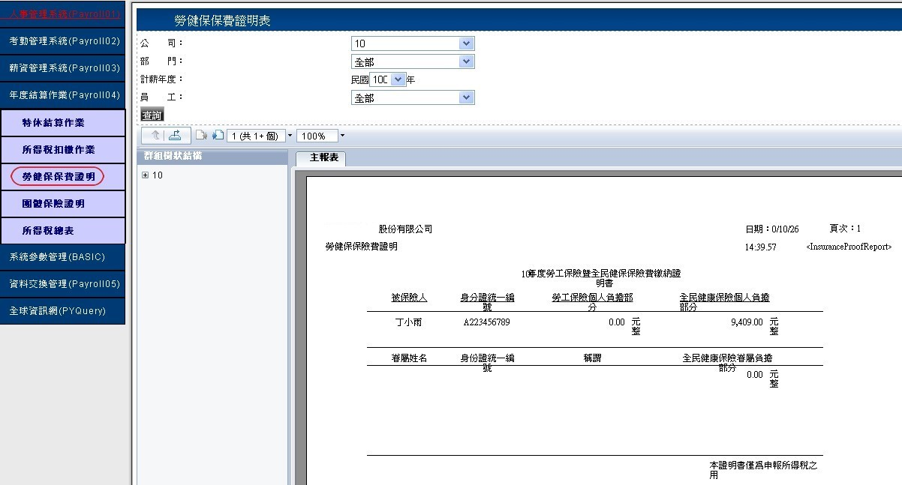

2.查詢作業
2.1 本作業依【公司】、【部門】、【員工】、【特休年度】所顯示的下拉式選單來查詢已建檔資料
2.2 在結算特休天數時，可依照【到職基準日】輸入日期，點選
按鍵，增修年度特休休的筆數，參考(圖E-3)。
HRMS人力資源系統
伍、年度結算作業 (※注意，【新增】、【刪除】、【編輯】、【查詢】等功能限具有相應功能權限者可使用。)
A.特休結算作業
1.新增作業
1.1 點選左側【特休結算作業】，下拉式選單來選擇所屬【公司】，參考(圖E-1)。
(圖E-1)
1.2 點選的一欄，選擇【員工】與【特休年度】輸入【特休天數】、【已休天數】、【去年轉入天數】、【今年可轉換天數】、【是否已轉換】資料選擇與輸入完畢後，按下即可產生一筆新的資料，參考(圖E-2)。
(圖E-2)
2.查詢作業
2.1 本作業依【公司】、【部門】、【員工】、【特休年度】所顯示的下拉式選單來查詢已建檔資料
2.2 在結算特休天數時，可依照【到職基準日】輸入日期，點選
(圖E-3)
3.編輯與刪除作業
3.1 欲編輯【年度特休結算】作業，於選擇
編輯來修改【特休天數】、【已修天數】、【去年轉入天數】、【今年可轉換天數】、【是否已轉換】，結束請點選
更新或
取消來退出，參考(圖E-4)。
 (圖E-4)
(圖E-4)
3.2 欲刪除資料，於可直接點選
刪除退出，參考(圖E-5)。
(圖E-5)
B.所得稅扣繳作業查詢
點選左側【所得稅扣繳作業】可以依照【公司】、【部門】、【員工】、【年度】、【是否在職】所顯示的下拉式選單來查詢已建檔人員的【應稅所得】、【扣繳金額】資料，參考(圖E-5)。
(圖E-5)
C.勞健保保費證明查詢
點選左側【勞健保保費證明】可以依照【公司】、【部門】、【記薪年度】、【員工】所顯示的下拉式選單來查詢已建檔人員的資料，參考圖(E-6)。
(圖E-6)
D.團體保險證明查詢
點選左側【團體保險證明】可以依照【公司】、【部門】、【員工】所顯示的下拉式選單來查詢已建檔人員的資料，參考(圖E-7)。
(圖E-7)
E.所得稅總表查詢
點選左側【所得稅總表查詢】可以依照【公司】、【記薪年月】、【是否在職】所顯示的下拉式選單來查詢，點選將會帶出已建檔人員的資料，參考圖(E-8)。
(圖E-8)